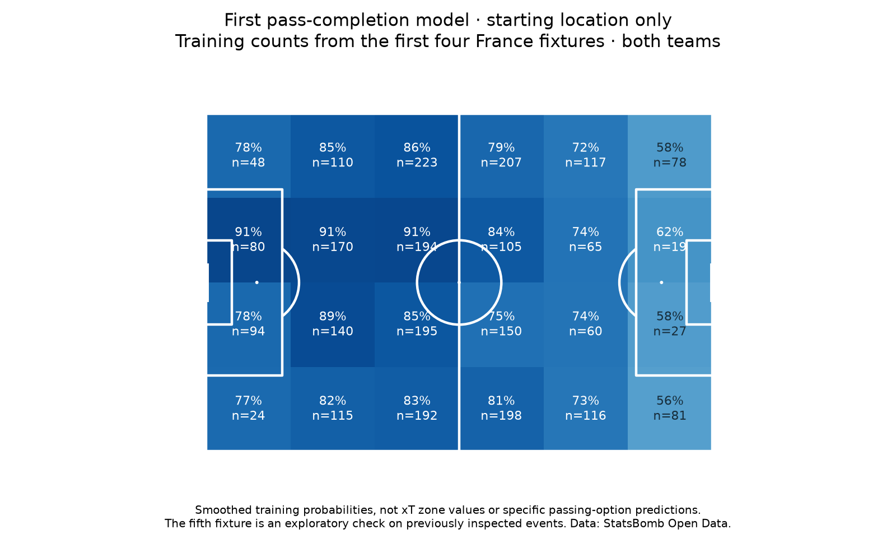

Football analyst training · Phase 3 · Lesson 47
Estimate a probability from previous passes.
We now use data instead of choosing the completion probabilities ourselves.
Completed assignment
Fit starting-zone counts on 2,808 passes in four matches, then check probabilities on 622 passes in the fifth. Both teams contribute. Overall training completion is 2,253/2,808 = 80.2%.
Each zone uses its own training completions and attempts, blended with the global training rate to reduce overconfidence in small groups. This blending is called smoothing; our strength of 20 is a chosen exercise setting.

Check against the actual outcomes
On the fifth fixture, the zone model's log loss is 0.502, compared with 0.522 for predicting 80.2% every time. Lower is better. This check reuses an already inspected match, so practical reliability remains unestablished.
Keep the question clear
The model gives the same probability to all passes starting in the same cell. It does not yet distinguish a short easy option from a difficult through ball. Do not treat it as a specific-option completion model.
Run 47_first_pass_completion_model.py in Spyder. fit_zones() learns the group rates from training rows only. The worked assignment is complete with assistance. Ask for more detail on smoothing or evaluation if needed.